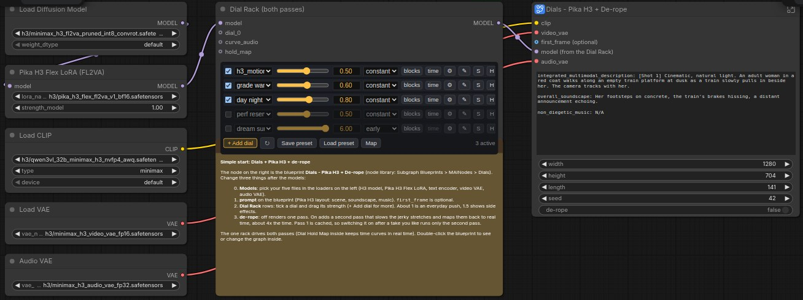
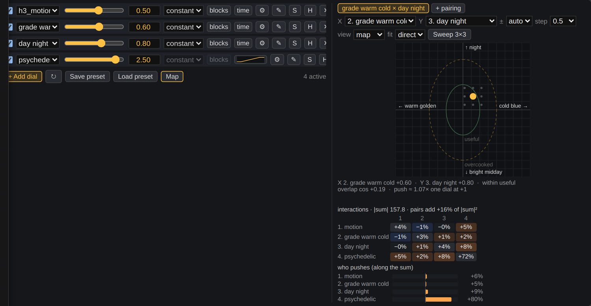
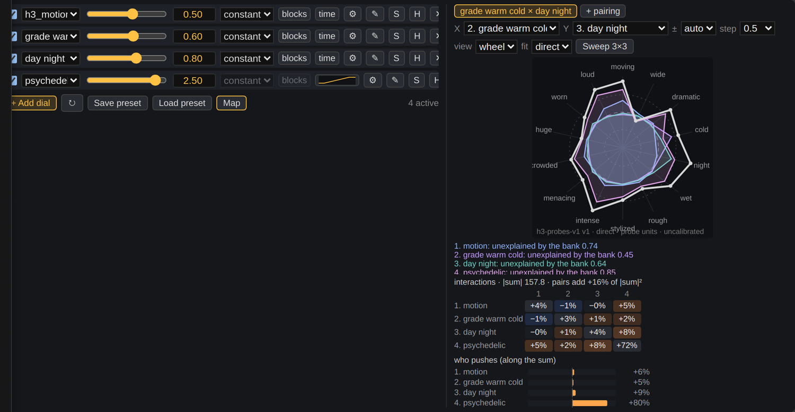
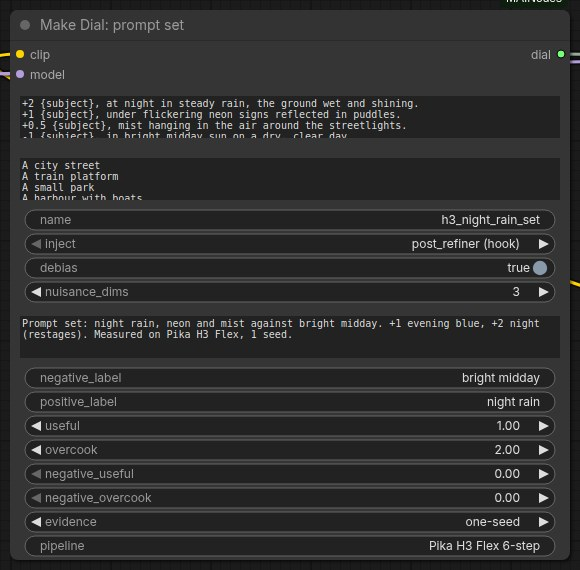
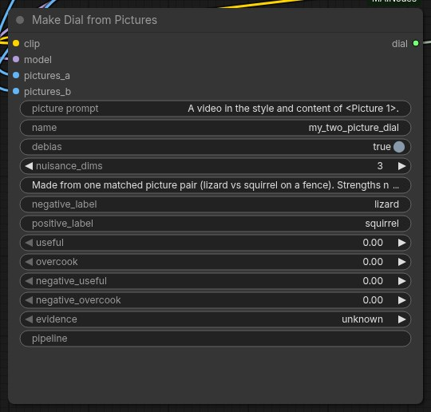
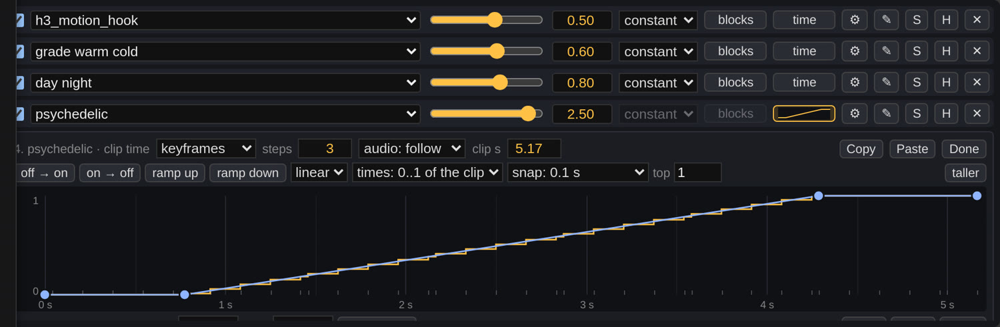
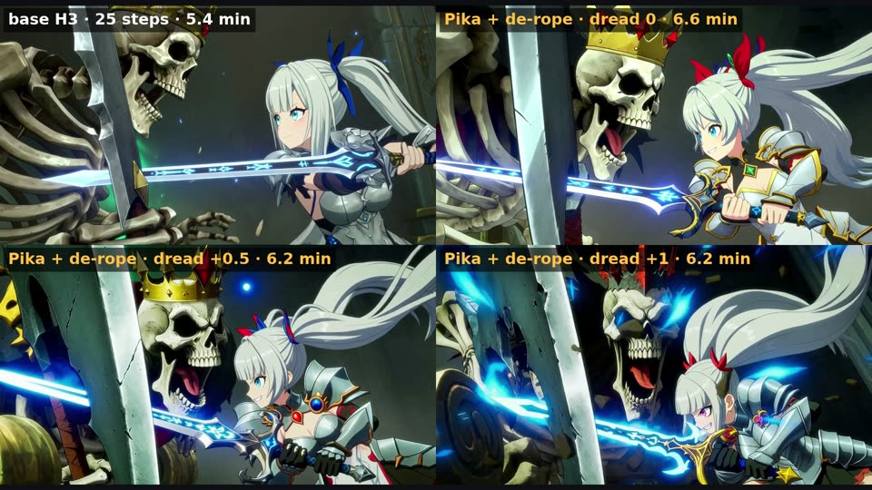
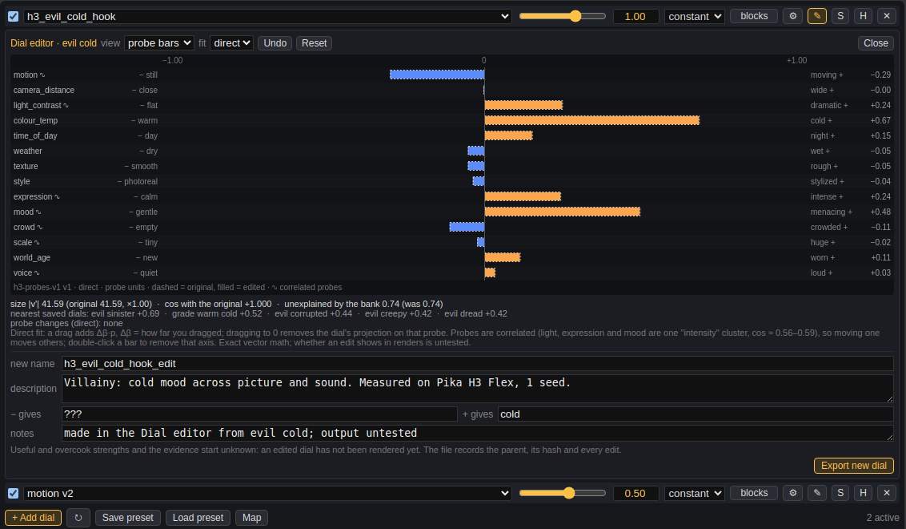

Dials guide
From install to your own dials, curves and de-rope, step by step.
A dial is a small file (~14 KB) made from two prompts, or two groups of pictures, that differ in one quality. In ComfyUI it works like a slider: negative strength moves the video toward the first side, positive toward the second. No training. Every number on this page was measured on Pika H3 Flex (a 6-step LoRA for MiniMax H3), mostly on one seed; treat strengths as starting points.
1. Which pack to install
| pack | what you get | pick it if |
|---|---|---|
| ComfyUI-MAINodes | The Dial Rack, Make Dial (prompts, prompt sets, hold pairs), Make Dial from Pictures, time curves, block strengths, the dial editor, MOSS-Image and Krea 2 support, de-rope. | you want everything on this page. Where new work happens. |
| ComfyUI-Dials | The original release: Load Dial, Apply Dial, Make Dial. Stable and small. | you only want a couple of sliders. |
Both read the same dial files from the same folder, so they can be installed side by side.
2. Install and dial files
- Install the nodes:
Restart ComfyUI. The nodes are under MAINodes/Dials.cd ComfyUI/custom_nodes git clone https://github.com/matlowai/ComfyUI-MAINodes - Get dial files from Hugging Face (MATLOWAI/H3-Dials) and put
them in
ComfyUI/models/loras/dials/. Dials you make are saved there too. Sub-folders whose name starts with_are hidden from the dial list, which is a handy place to park old dials. - You need MiniMax H3 in ComfyUI (the Comfy-Org repack) and, for the examples, the Pika H3 Flex LoRA.
3. Your first render
- Drag
dials_simple_pika_derope.jsononto the ComfyUI canvas. It has three parts: your model files on the left, the Dial Rack in the middle, and one Dials - Pika H3 + De-rope node on the right that holds the whole render. - Pick your files in the loaders on the left: the H3 model, the Pika H3 Flex LoRA, the H3 text encoder, and the H3 video and audio VAEs.
- Write your prompt in the node on the right. A first frame is optional.
- On the Dial Rack, tick a dial and drag its slider. The example starts with motion +0.5, warm–cold +0.6 and day–night +0.8, plus two rows switched off.
- Queue. At 1280×704 and 141 frames a take took 75 s on one RTX PRO 6000.
- Like the take and the motion smears? Switch de-rope on and queue again. Only the second pass runs (the first comes from the cache): about 200 s more.

The full graphs (dials_rack_pika_derope.json and the picture and prompt-set examples) show every node,
for when you want to change the sampler or the de-rope settings.
4. Choosing a strength
| strength | what usually happens |
|---|---|
| +0.5 to +1 | The everyday range. The effect is clear and the scene stays the same. |
| +1 to +2 | Strong. Side effects start: the scene restages, characters change. |
| above +2 | Transformations. Can be great on purpose, rarely subtle. |
The same holds for the negative side. Some dials only work in one direction.
Behaviour often flips at a threshold rather than growing smoothly. A psychedelic dial on an anime kitsune character (1 seed, colour swing between the dial's on and off windows):
| strength | +1.0 | +1.5 | +1.8 | +2.0 | +2.5 | +3.0 | +4.0 |
|---|---|---|---|---|---|---|---|
| colour swing | +3 | +5 | +15 | +27 | +30 | +32 | +37 |
Up to +1.5 she stays herself and the world turns trippy. From +2.0 she becomes a different, masked figure every time. So the useful choices were +1.5 or +2.0, not the values between. When you test a dial, try a ladder of strengths on one seed and look for where it flips.
Each dial file can carry its own useful and overcook strengths. The rack's map draws them as rings, and the ⚙ button on a row lets you write down what you found.
5. The Dial Rack

One row per dial. + Add dial adds a row; a dial wired into a dial_ socket (straight from a Make
Dial node) appears as a row too.
- Checkbox turns a row on or off. Slider and number set the strength.
- S solos a row. H (hold) keeps that quality out of the mix instead of adding it: for example, hold "loudness" while a face dial makes faces more expressive.
- Map opens a square where two rows move together: drag the dot to set both strengths. Inner ring = useful, outer ring = overcooked. Sweep 3×3 queues nine renders around the dot.
- The interaction grid shows which dials reinforce (warm) or cancel (blue) each other. The wheel shows each dial against 14 probe axes (motion, light, colour, mood, voice...). Both are maths on the files, not renders.
- Save preset / Load preset keep the rows (file names and settings, never weights).
- Row order does not change the result.

6. Make a dial from prompts
- Add Make Dial and connect the H3 CLIP and MODEL.
- Write pairs, one per line, as
A ||| B. Use{subject}and list 4 to 8 different subjects below; each pair is repeated for every subject. - Give it a name and labels for the two sides (what − and + give).
- Queue once. The dial is saved to
models/loras/dials/<name>.safetensorsand also comes out of the node, so you can wire it straight into a rack row. Making one takes about a minute. - The report shows pair agreement: above 0.6 means your pairs point the same way.
{subject} stands perfectly still. ||| {subject} moves energetically.
{subject} in a calm, motionless scene. ||| {subject} in a lively scene full of motion.
+/- lines) and the dial info fields filled in.Writing pairs that work
- Change one thing. A and B should be identical except for the quality you want.
- Pairs are learned literally. "runs past the camera" teaches subjects to leave the frame. Describe the effect you want, in place.
- Don't put actions on one side only. Energetic actions named on one side taught storm and handheld-camera dials motion instead.
- Dials steer H3's sound too. A mood dial can change voices. Check dialogue scenes by ear.
- Adults only as subjects for face and body dials.
Extras
A ||| B :: 2counts a pair twice.- Prompt sets: lines starting
+2,+1,-1build a dial from more than two prompts (the weighted mean of the + lines minus the − lines). - Hold pairs: a line starting
!is a quality the dial must not change, e.g.! {subject} speaks quietly. ||| {subject} speaks loudly.In one test a face dial raised voice level +4.8 dB; with loudness held, +1.7 dB, and the faces stayed animated (3 seeds). - Word weights inside a pair:
(expressive:2).
7. Make a dial from pictures
- Add Make Dial from Pictures and connect CLIP and MODEL.
- Wire pictures for side A into
pictures_aor thegroup_asockets (a new socket appears for each), and side B the same way. Any size, any number. - Match them: same framing, light and background at each position, changing only the quality you want.
- Pick a framing:
content(what is in the picture),look(style and grade),bare,all averaged, or your own sentence. - Queue, then use the dial like any other.

8. Change a dial over the clip
A dial can come in, go out or swell during the clip, inside one generation. Click time on a row and draw the curve: 0 = off, 1 = the row's strength.

- Click to add a point, drag to move it, double-click to delete. Shift+click or Ctrl+drag selects several; the arrow keys nudge them.
- times: use
secondsto match timings written in your prompt ("from 2 s, ..."). - Presets: off → on, on → off, ramp up, ramp down, dip.
- audio-driven: connect music to the rack's
curve_audioand follow its loudness or onsets. - Each curve costs one extra model call on the first 2 steps (about 1.24× render time).
What to expect
- Draw sections, not beats. Colour and style dials switch within 0.1 to 0.2 s; lighting dials ramp over about 1.5 s. None of them follows individual drum hits.
- About a fifth leaks. The "off" part of a day–night curve still got about 20 % of the darkening.
- Describe the change in the prompt. "The world begins to melt, slowly and smoothly, into flowing rainbow light" turned hard switches into visible in-between frames. The curve sets when; the prompt sets how.
- Keep levels between 0 and 1. Above 1 or below 0 is weaker than it looks. For a negative stretch (a motion freeze for a hit-pause, say), add a second row of the same dial at a negative strength and give it a 0-to-1 curve. A motion row at −6 for a second froze a punch's impact (motion 8.6 → 1.2, with a reference image).
9. Dials with de-rope
De-rope fixes smeared fast motion: it finds the stretches that move too fast, slows them, re-renders them and maps the clip back to real time.
- On the Simple workflow it is one switch, and one rack drives both passes. Off skips the whole second pass (75 s, and the output is pass 1 unchanged); on took 276 s from scratch on our test scene.
- Time curves follow real clip time through the de-rope. The second pass renders a longer, stretched clip, and without help a curve would land 0.3 to 0.5 s early. The Simple node handles it.
- Building your own graph: put a Dial Hold Map node between the rack's model and the second pass, and wire
H3 Time Smear's
hold_map_usedinto it. Same result as a second copy of the rack (pixel-identical in our test), with one rack to keep in sync.

10. Blocks, audio, editor, other models
Block strengths
blocks on a row opens a strip with one cell per model block (50 on H3). Paint how much of the dial each block gets. Presets: all, none, first half, second half, odd, even. In our tests the first half of the model carries the whole effect.
Keep the soundtrack clean
On a time-curve row, audio: protect keeps the dial off the soundtrack. Speech errors went from 0.29 to 0.00 in 3 of 4 cases. It is partial: the sound still hears the dialled video.
Dial editor (✎)

Shows what a dial contains along the probe axes. Drag a bar to 0 to take that flavour out (say, the colour out of a mood dial), then Export new dial. The new file records its parent. Its strengths start as unknown: render it before you trust it.
Other models
| model | status | strengths |
|---|---|---|
| MiniMax H3 (incl. Pika H3 Flex) | everything on this page | ±0.5 to ±2 |
| MOSS-Image | text dials, rack, holds, envelopes | about ±4, overcooks near ±8 |
| Krea 2 | partial: one side of day–night and weather | to about −4; colour grades break |
The nodes detect the model; there is nothing to set. A dial made for one model refuses to load on another. Picture dials, the wheel and the editor are H3 only.
11. When it goes wrong
| you see | try |
|---|---|
| Nothing changes | Raise the strength (picture dials need more). Check the row is on and nothing else is soloed. |
| The whole scene changes | Lower the strength; past +1.5 scenes restage. Check the pairs differ in one thing only. |
| The dial brings something extra (outfits, colour) | Pairs leak. A psychedelic dial also brings rave outfits at +2.5. Add a hold pair, or remove that probe in the editor. |
| Voices change | Use audio: protect, or hold loudness in the pairs. Sinister crushes speech. |
| A curve lands early in a de-rope run | Your own graph needs a Dial Hold Map before the second pass (the Simple node has one). |
| A transition looks like a hard cut | Describe the transition in the prompt, and use a reference image to keep the scene steady. |
More detail: the Dials reference and everything we learned. In ComfyUI, the Node Info panel on the Dial Rack and on Make Dial from Pictures has the same help.